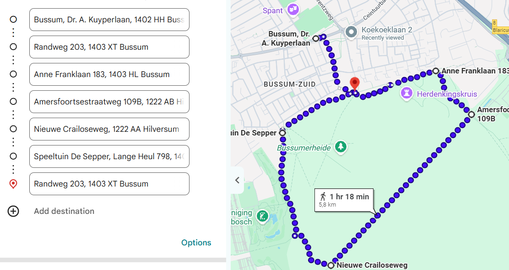
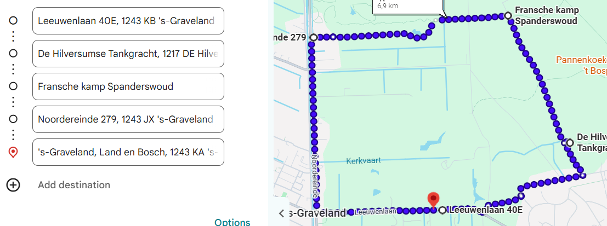
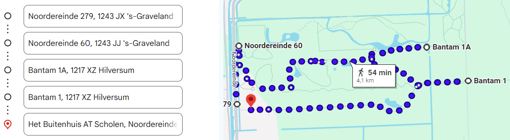
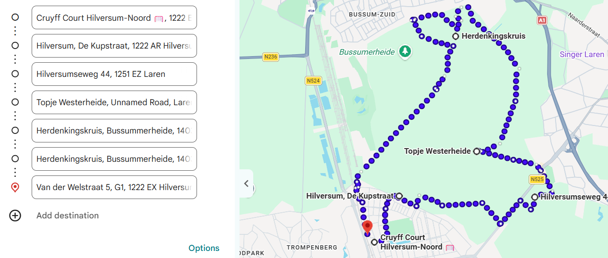

Explore Our Running Routes
View the full route maps around Bussum and Hilversum.
Bussummerheide - Route 1
Running route through the Bussummerheide area.

Back to Route OverviewSculpture Garden de Zanderij - Route 2
Explore the full running route.

Back to Route OverviewSpanderswoud Route - Route 3
Explore the full running route.

Back to Route OverviewBussummerheide and Westerheide Route - Route 4
Explore the full running route.

Back to Route Overview